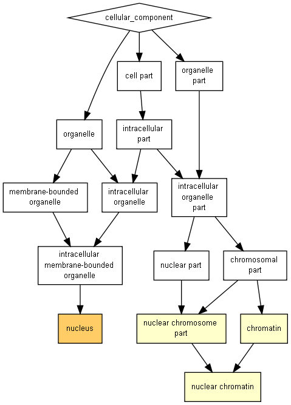

P-value color scale
| > 10-3 |
10-3 to 10-5 |
10-5 to 10-7 |
10-7 to 10-9 |
< 10-9 |

| GO term |
Description |
P-value |
FDR q-value |
Enrichment (N, B, n, b) |
Genes |
| GO:0005634 |
nucleus |
2.85E-6 |
5.48E-3 |
2.65 (18319,5193,24,18) |
[+] Show genes
HOXA13 - homeobox a13
PITX3 - paired-like homeodomain 3
TBL1XR1 - transducin (beta)-like 1 x-linked receptor 1
GATA6 - gata binding protein 6
CDK13 - cyclin-dependent kinase 13
FBXL17 - f-box and leucine-rich repeat protein 17
IRX1 - iroquois homeobox 1
SP8 - sp8 transcription factor
ZNF703 - zinc finger protein 703
SOX1 - sry (sex determining region y)-box 1
ARID1A - at rich interactive domain 1a (swi-like)
PBX3 - pre-b-cell leukemia homeobox 3
ASXL2 - additional sex combs like 2 (drosophila)
FOXB2 - forkhead box b2
NKX6-1 - nk6 homeobox 1
CLASRP - clk4-associating serine/arginine rich protein
CPEB3 - cytoplasmic polyadenylation element binding protein 3
EVX2 - even-skipped homeobox 2
|
| GO:0000785 |
chromatin |
1.28E-4 |
1.23E-1 |
9.81 (18319,389,24,5) |
[+] Show genes
ASXL2 - additional sex combs like 2 (drosophila)
HAND2 - heart and neural crest derivatives expressed 2
CDK13 - cyclin-dependent kinase 13
TOX4 - tox high mobility group box family member 4
ARID1A - at rich interactive domain 1a (swi-like)
|
| GO:0000790 |
nuclear chromatin |
3.27E-4 |
2.1E-1 |
11.83 (18319,258,24,4) |
[+] Show genes
ASXL2 - additional sex combs like 2 (drosophila)
HAND2 - heart and neural crest derivatives expressed 2
CDK13 - cyclin-dependent kinase 13
ARID1A - at rich interactive domain 1a (swi-like)
|
| GO:0044454 |
nuclear chromosome part |
4.96E-4 |
2.38E-1 |
7.33 (18319,521,24,5) |
[+] Show genes
ASXL2 - additional sex combs like 2 (drosophila)
HAND2 - heart and neural crest derivatives expressed 2
CDK13 - cyclin-dependent kinase 13
TOX4 - tox high mobility group box family member 4
ARID1A - at rich interactive domain 1a (swi-like)
|
Species used: Homo sapiens
The system has recognized 19373 genes out of 20104 gene terms entered by the user.
19373 genes were recognized by gene symbol and 0 genes by other gene IDs .
196 duplicate genes were removed (keeping the highest ranking instance of each gene) leaving a total of 19177 genes.
Only 18319 of these genes are associated with a GO term.
The GOrilla database is periodically updated using the GO database and other sources.
The GOrilla database was last updated on Jun 23, 2018
This results page will be available on this site for one month from now (until
Jul 25, 2018
). You can bookmark this page and come back to it later.
'P-value' is the enrichment p-value computed according to the mHG or HG model. This p-value is not corrected for multiple testing of 1922 GO terms.
'FDR q-value' is the correction of the above p-value for multiple testing using the Benjamini and Hochberg (1995) method.
Namely, for the ith term (ranked according to p-value) the FDR q-value is (p-value * number of GO terms) / i.
Enrichment (N, B, n, b) is defined as follows:
N - is the total number of genes
B - is the total number of genes associated with a specific GO term
n - is the number of genes in the top of the user's input list or in the target set when appropriate
b - is the number of genes in the intersection
Enrichment = (b/n) / (B/N)
Genes: For each GO term you can see the list of associated genes that appear in the optimal top of the list.
Each gene name is specified by gene symbol followed by a short description of the gene
Back to the GOrilla main page